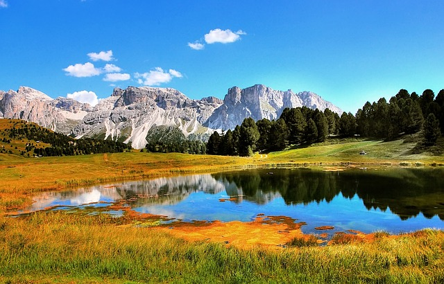

A föld 500 km²-es és annál nagyobb területű tavai vannak.A bolygó összes kontinense osztozik rajtuk.

A föld legnagyobb tava területe 371ezer km². Ez az egyetlen tő ami meghaladja a 100ezer km²-t.
Tudja meg többet!| Tó | Ország | Édes és sós |
|---|---|---|
| Kaszpi-tenger | Azerbajdzsán | Sós |
| Felső-tó | USA, Kanada | Édes |
| Viktória-tó | Kenya, Tanzánia, Uganda | Édes |